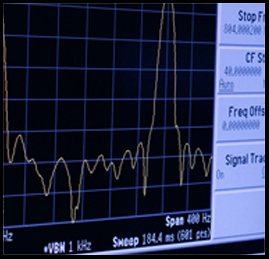

RF Testing Services and Fixture Design
We offer load pull characterization, S-parameter testing, and test fixture design
Mfreq offers a wide-range of Rf testing services:
• RF Power -- Up to 250W and >500W pulsed
• Impedance -- Sub-1 Ohm tuning
• Fundamental frequency -- 400 MHz to 6 GHz
• Harmonic tuning -- Independent 2nd and 3rd harmonic tuning
• Modulation -- LTE, W-CDMA, EDGE, CW, two-tone, pulsed
• Measurement -- ACPR, EVM, IMD, Po, Gain, Eff., etc.
• Packaged devices -- Standard RF Power packages and custom packages
• S-parameter-- small signal, DC to 6 GHZ
• ATE for high-volume production test (hardware and software)
Test fixture services: Fabrication, Assembly, Tuning, and Testing
• High Power RF Discrete Transistor Test Fixtures
• Low Power RF Test Fixtures with Connectorized PC Boards
For more information